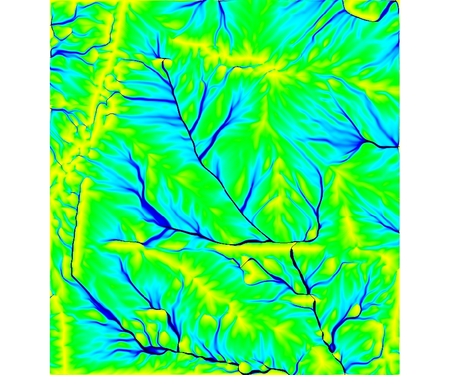
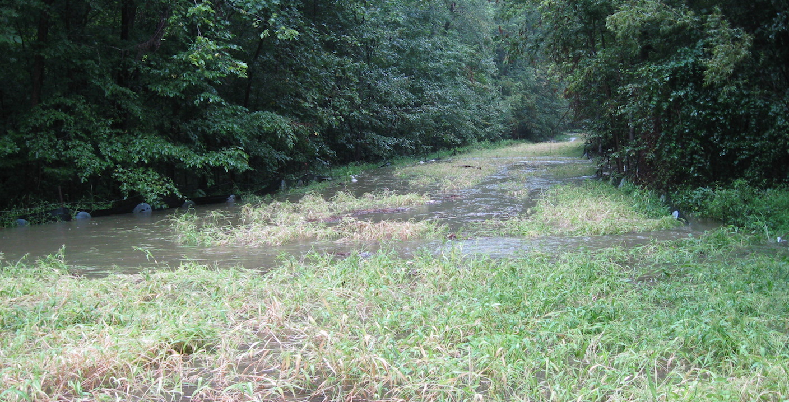
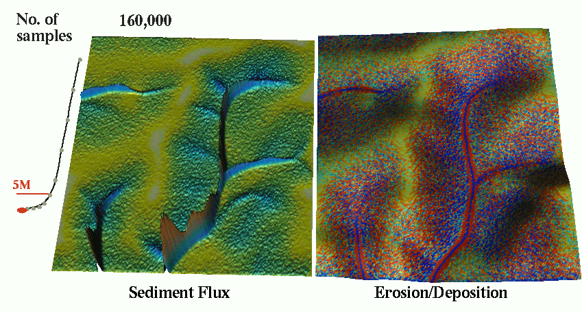
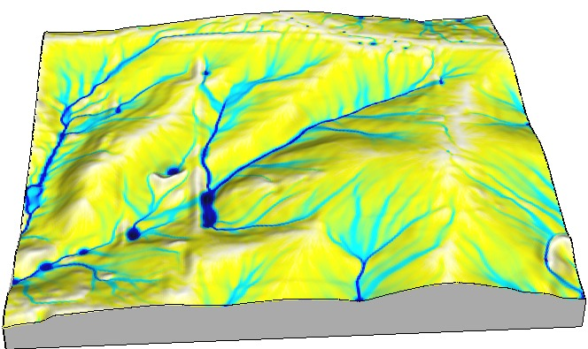

Process-based water flow simulation
Helena Mitasova, Anna Petrasova, Vaclav Petras
GIS714 Geosimulations NCSU
Learning objectives
- surface water flow modeling components
- shallow water flow equations
- numerical methods
- applications: surface runoff, dam breach
- visualization of surface water flow dynamics
Modeling components
When performing simulations we need to consider:
- Modeled quantity [units]: water, pollutant, vegetation, population density, individual organism, ...
- Spatial and temporal scale
- Configuration space and interactions: modeled quantity as function of environmental variables, e.g., topography, land cover, infrastructure...
- Governing equations or rules: continuity/mass conservation, diffusion, momentum conservation, ...
Modeling components: overland flow
- Modeled quantity: water depth [m], discharge [m$^3$/s]
- Spatial and temporal scale: first order stream [1m resolution], single storm [minutes]
- Configuration space and interactions: water depth and precipitation interaction with topography, soil properties, land cover, infrastructure...
- Governing equations: bivariate shallow water flow equation, Mannings equation, rational equation ...
Rational equation
- Simplest approximation of discharge from small watersheds (few tens of acres)
- Assumes steady state, uniform rainfall excess (runoff) and constant velocity
- Discharge is then sum of rainfall excess produced by each grid cell routed to the outlet
Rational equation
$$ Q = C \, i \, A $$
- $Q$ [$\rm m^3/s$] is maximum rate of runoff (discharge)
- $C$ is runoff coefficient
(ratio of rainfall that becomes runoff : forest 0.05-0.25, pavement 0.75-0.95)
- $i$ [$\rm m/s$] average rainfall intensity
- $A$ [$\rm m^2$] is upslope contributing area
Time to concentration is used to identify length of rainfall needed to reach the steady state
Rational equation
$$ Q = C \, i \, A $$


Shallow water flow equation
Assuming that vertical variability in flow velocity is negligible it is used to simulate:
- overland flow
- dam breach flooding
- storm surge
- many other flow processes


Shallow water flow equations
- Continuity equation: mass conservation
- Momentum conservation equations
also refered to as St Venant equations.
Continuity equation for flow in open channel
$$ {\partial h \over \partial t} +
\left( {\partial h v_x \over \partial x} + {\partial h v_y \over \partial y} \right) = 0$$
Shallow water flow during storm
Given rainfall excess rate $i_e$ SWF can be written as:$$ {\partial h \over \partial t} + \nabla \cdot h \, {\bf v} = i_e$$
where flow velocity ${\bf v}$ is given by Manning's relation
$${\bf v} = {k\over n} h^{2/3} s^{1/2} {\bf s_0}$$
SWF solutions
Estimate water depth $h$ at a location $(x,y)$ and time $t$.
- Simplified approximations for steady state
- Numerical solutions for
- dynamic wave: coupled continuity and momentum conservation equations
- diffusive wave: dynamic $s_f$ different from $s$
- kinematic wave: $s_f = s$
SWF simplified
Solution of continuity and momentum equations for a steady water flow that is close to kinematic wave approximation$$ \partial h({\bf r},t)/\partial t =0 \quad \longrightarrow \quad \nabla \cdot [ h({\bf r}){\bf v}({\bf r})] = i_e({\bf r})$$
approximate diffusive wave effects $ \propto \nabla^2 [h^{5/3}({\bf r})]$ : $$-{\varepsilon({\bf r})\over 2 }\nabla^2 [h^{5/3}({\bf r})] +\nabla \cdot [ h({\bf r}){\bf v}({\bf r})] = i_e({\bf r})$$
Green's function solution
Evolution of the water depth solution

Duality of particles and fields
Modeled quantities can be represented by
- fields - continuous distribution (scalar, vector, tensor)
- particles - discrete sampling of fields
Corresponce between the two representations:
density of particles - field $f(r)$
Duality of particles and fields
Process can be modeled as
- evolution of fields
- evolution of spatially distributed particles


Path sampling method uses this duality to solve the governing equations
Water flow: methods comparison

geometry based methods, kinematic wave, approx. diffusion wave
Water flow with diffusion term

Path sampling method: accuracy
Error is proportional to the $1/\sqrt N$, where N is the number of particles


Path sampling method: accuracy
Error is proportional to $1/\sqrt N$, $N$ is number of particles

Multiscale implementation
Path sampling enables implementation with multiple resolutions by adjusting the weight of the particles


Spatially variable source
Overland flow with spatialy variable source areas

Spatially variable source
Scenarios with spatialy variable source areas


Urban flooding: sub-meter resolution
Path sampling solution for overland flow: with uniform rainfall and land cover, approx. diffusive wave


Finite volume solution
Dam breach model - full diffusive wave solution with backwater effect

see supplemental material for equations and r.damflood manual page for references
Visualization

Visualization
Flow depth during and after rainfall: approximate diffusive wave

Applications
Surface water in landscape with depressions

Applications
Surface water at ultra high resolutions: tilled field

Assignment
Surface water during hurricane Alberto
